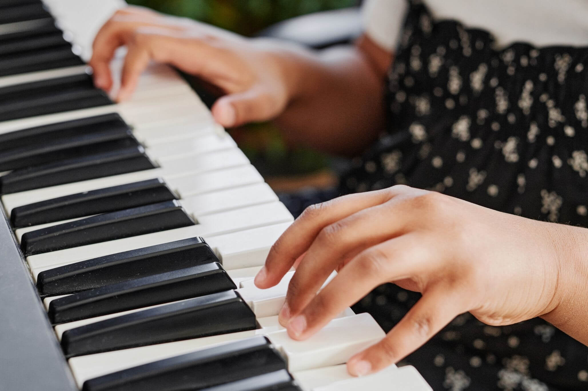

The piano, a majestic instrument of timeless beauty, holds within its ebony and ivory keys a captivating story that unfolds with every delicate touch. From the moment one's fingers caress its smooth surface, a world of boundless possibilities emerges, inviting both the player and the listener into a realm of melodic enchantment.
With its grandeur and versatility, the piano has become a centerpiece of musical expression. From the elegant compositions of classical masters like Mozart and Beethoven to the soul-stirring jazz improvisations of legends like Duke Ellington and Thelonious Monk, the piano has traversed genres and eras, leaving an indelible mark on the annals of music history.
Beneath the player's fingertips, the piano springs to life, its strings vibrating with resonance and its hammers delicately striking against them. The instrument's dynamic range allows for a multitude of emotions to be conveyed – from the gentle whispers of a tender ballad to the thunderous roars of a passionate crescendo. It is a vehicle for conveying the full spectrum of human sentiment, its keys translating the depths of joy, sorrow, love, and longing.
Beyond its musical prowess, the piano carries an air of elegance and sophistication. Its polished curves and intricate craftsmanship embody a sense of timeless beauty. A grand piano, with its majestic presence, commands attention in any room, becoming a focal point that demands both admiration and reverence.

